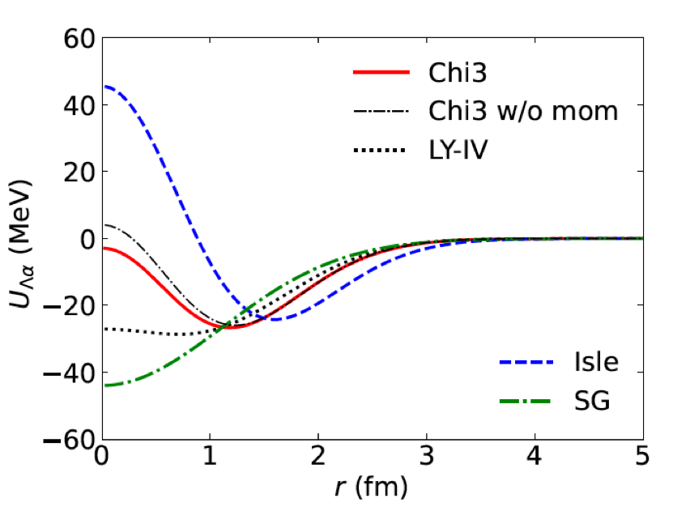
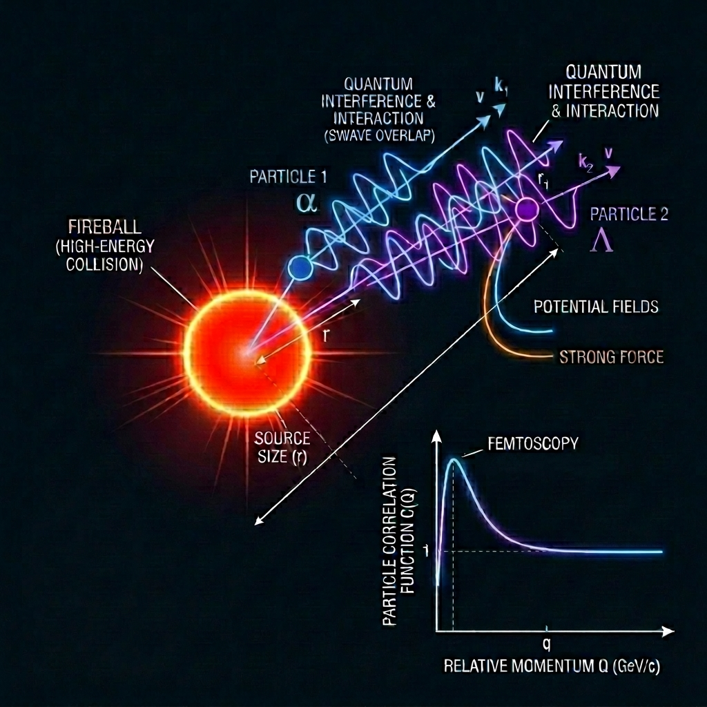
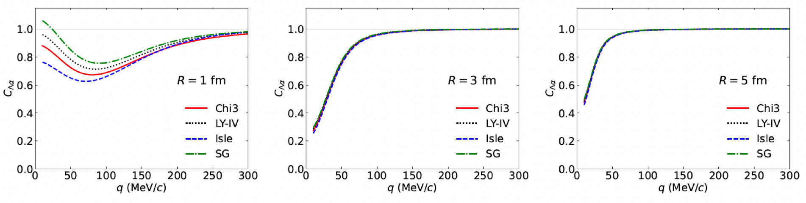
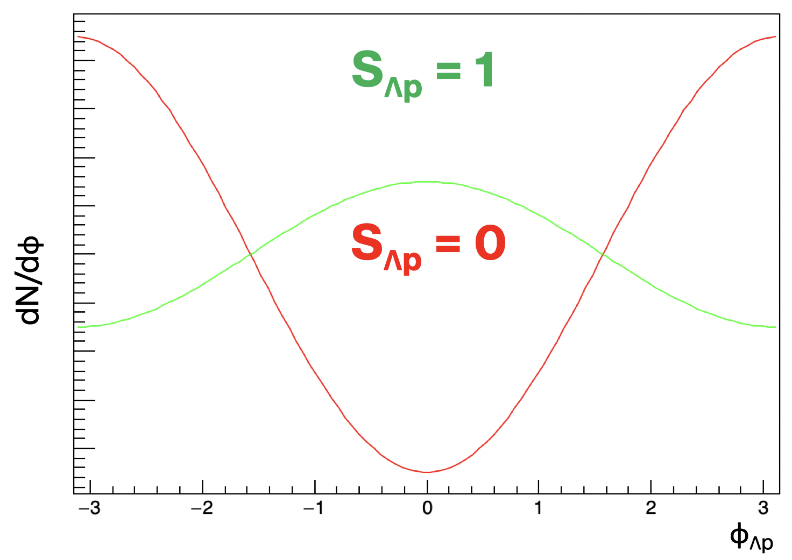

Physics Motivation
Investigating the baryon-baryon (BB) interaction, in particular the Λ-nucleon (ΛN) interaction at high densities, remains a cornerstone of nuclear and hadron physics. This is fundamentally linked to the "hyperon puzzle" in neutron stars. Theoretically, introducing hyperons into dense matter softens the nuclear equation of state (EoS), which limits the maximum mass of neutron stars. To explain the observation of 2M⊙ neutron stars, significant repulsion must exist in the high-density (short-range) BB interaction.
Historically, the ΛN interaction has been studied through hypernuclear spectroscopy. However, these bulk properties exhibit limited sensitivity to the short-range details of the interaction. Multiple potential models with different internal structures can frequently reproduce the same binding energy, necessitating a tool sensitive to short-distance dynamics.

αΛ potentials for various models. The short-range behavior differs drastically, yet they all yield the same binding energy for hypernuclei. (Figure from A. Jinno, Y. Kamiya, T. Hyodo, and A. Ohnishi, Phys. Rev. C 110, 014001 (2024).)
αΛ Femtoscopy & J-PARC E88
Femtoscopy is a revolutionary tool that measures the momentum correlation between two particles at low relative momentum, providing a unique way to probe the space-time characteristics of the emission source and final-state interactions. When the emission source size is small (R ≲ 1.5 fm), the correlation functions become highly sensitive to the short-range part of the potential.

Conceptual diagram of femtoscopy. Two particles emitted from a high-energy collision source (fireball) interact via quantum interference and potential fields (strong force, Coulomb) as they travel outwards.
The proton-nucleus (pA) collisions at J-PARC naturally produce these small source sizes. We specifically focus on the αΛ system. The α particle is exceptionally dense, reaching nearly twice the normal nuclear saturation density, allowing us to study the ΛN interaction at densities relevant to neutron star cores. Furthermore, the α particle has both zero spin and zero isospin, providing a "clean" measurement without the need for state decomposition.
The primary goal of the J-PARC E88 experiment is to measure the invariant mass of K+K- produced from φ meson decays in pA reactions, aiming to investigate the partial restoration of chiral symmetry in nuclear matter. Taking advantage of the high-statistics data collected by the high-resolution magnetic spectrometer for this primary purpose, we will simultaneously conduct αΛ femtoscopy. By simultaneously analyzing pp, pα, and Λp pairs, we can self-consistently determine the source sizes and extract the first definitive constraints on the short-range αΛ interaction.

Predicted αΛ correlation functions for different source sizes and potential models. Smaller source sizes maximize sensitivity to the inner structure of the interaction potential. (Figure from A. Jinno, Y. Kamiya, T. Hyodo, and A. Ohnishi, Phys. Rev. C 110, 014001 (2024).)
STAR Beam Energy Scan (BES) Program
To verify the consistency of the interaction models across different system sizes and energies, we also analyze αΛ correlations in heavy-ion (AA) collisions. We are participating in the STAR Beam Energy Scan (BES) program at RHIC (√sNN ~ 7.7 GeV) to study these correlations in a dense, heavy-ion environment.
Future Prospect: Spin-Polarized Femtoscopy at J-PARC-HI
The proposed J-PARC Heavy-Ion (J-PARC-HI) project will introduce a revolutionary capability for spin-dependent femtoscopy. While traditional femtoscopy provides pair-spin averaged results, J-PARC-HI will integrate a proton polarimeter. By measuring the proton helicity and utilizing the weak-decay asymmetry of the Λ, we will achieve a full spin-decomposition of the Λp correlation function, independently determining the scattering parameters for the spin-singlet and spin-triplet states.

Expected azimuthal angle distributions for the spin-singlet (red) and spin-triplet (green) states in Λp femtoscopy at J-PARC-HI, demonstrating the feasibility of spin decomposition.